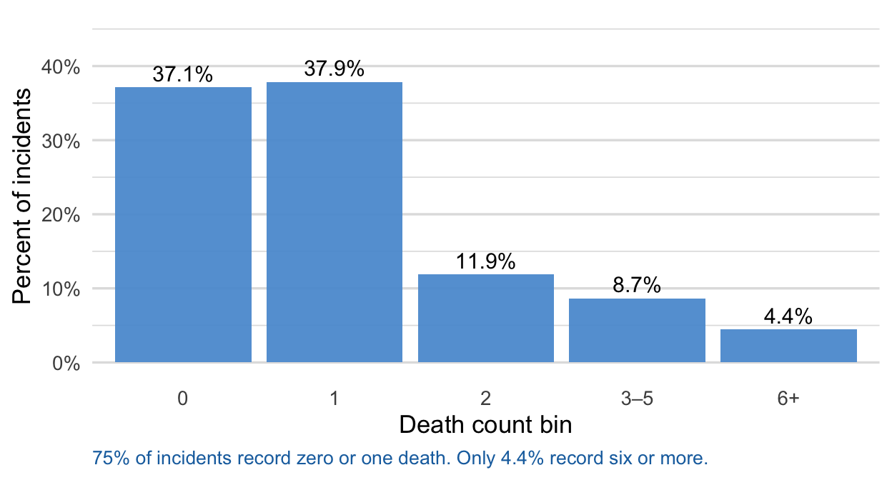

From Narratives to Numbers
Evaluating Automated Fatality Count Extraction for Conflict Event Data
Emmanuel Teitelbaum
George Washington University
April 8, 2026
Overview
- Automated extraction has focused primarily on classification tasks (e.g. action type, perpetrator)
- The extraction of counts is underexplored
- I look at ~4,300 SATP incidents and two generative model families (seq2seq and open source decoders)
- Generative models are strong overall but fail on rare high-count events
- Some failures addressable through prompt engineering
Why Fatality Counts?
- Define which events qualify as armed conflict (e.g. UCDP: ≥ 25 deaths for active conflict; ≥ 1000 battle deaths for a war)
- Primary measure of conflict severity: escalation, cross-conflict comparison, trend analysis
- Major datasets record counts, but automated extraction is noisy
- Dictionary-based methods tend to overcount
- Span-based tend to undercount
- LLM prompting can be unstable in that it shifts with query formulation
Why Open Source Models?
Reproducibility — whereas API-based models change silently, a pinned HuggingFace checkpoint is fully reproducible and shareable
Data privacy — routing sensitive information through a commercial API raises IRB and data sovereignty concerns (survey/interview data)
Cost at scale — trivial for one study, may matter more for initial filtering/triage in early stages of pipeline for larger projects
Environmental costs - running a small local model may be more energy-efficient than routing millions of queries through a large data-center model
Key takeaway: An small open source model with the right prompting strategy can match or exceed proprietary models on rare high-fatality events
What Makes Counts Hard
- Unbounded output space — non-negative integer over a potentially large range, including values rare or unseen in training
- Non-verbatim answers — the correct count is often distributed across clauses, not a text span
- Zero discrimination — we want model to ignore injuries, arrests, escapes but return zero when no deaths mentioned
- Actor attribution — security forces vs. insurgents vs. civilians
- Uncertainty and ranges — “more than a dozen”, “claimed”, “bodies not recovered”
A Hard Case
Two CRPF personnel were killed and four others injured during an encounter with cadres of the CPI-Maoist in Giridih District. The encounter followed an ambush by the Maoists on a Police patrol in the Madhuban forest area and it reportedly continued for over 12 hours. Police sources claimed that over a dozen Maoists were killed, but their colleagues managed to take away the bodies. Maoists also triggered seven landmine blasts during the encounter.
Human coders: 14. Every model predicts 2.
The model must attribute deaths to actors, interpret “over a dozen”, and ignore “four injured” and “seven landmine blasts” before deciding whether unrecovered bodies count at all.
Data: SATP Corpus
- South Asia Terrorism Portal: Maoist insurgency in India, 2005–2016
- Full corpus: ~9,919 incident summaries, hand-coded by research team
- Filtered to armed assault and bombing events: ~4,300 incidents
- 60/20/20 stratified split by count bin; validation set used for prompt selection and early stopping; test set evaluated once per finalized strategy
Single-conflict benefits: Actor identification, language, and reporting conventions are fixed across every incident. When a model fails on a high-count case, we can more confidently attribute the error to count extraction as opposed to actor misidentification or inconsistent reporting.
The Distribution Problem

Figure 1
A model trained on this distribution has little basis for predicting rare high-fatality events, and aggregate metrics will hide that failure.
Why Models Fail on High Counts
Lexical complexity — bin 6+ narratives involve more actors, more clauses, and more hedging language (“claimed,” “over a dozen,” “bodies not recovered”)
Numeric reasoning — high counts rarely appear as a single number, so they require aggregating deaths across multiple armed groups distributed across the narrative
Conservative bias — models apply an implicitly discount claimed attacker deaths even when the coding protocol counts them
Skewed training distribution — fine-tuning on a corpus where 75% of examples are zero or one death anchors the model’s output prior toward low counts (sea2seq only)
Some errors are also irreducible: 4 cases where the true count is absent from the text (label errors, follow-up revisions) set a floor no model can reach.
Two-Track Design
Seq2seq fine-tuning
- Primary: Flan-T5-Large (770M parameters, instruction-tuned)
- Ceiling: T5-XL-QLoRA (3B parameters, QLoRA fine-tuning)
- Prompt: “How many people were killed? Answer with only a number.”
LLM prompting (no parameter updates)
- Primary: Llama-3.1-8B-Instruct
- Ceiling: GPT-4o-mini
- Prompt: zero-shot JSON extraction baseline
Shared baseline: ConfliBERT + Poisson regression head
Evaluation Framework
Aggregate metrics (primary)
- Mean absolute error (MAE), RMSE, within-1, within-2, nonzero MAE
- Bootstrap significance vs. ConfliBERT-Poisson baseline (n = 5,000)
Bin-level decomposition (diagnostic)
- Exact match rates across five count bins:
0, 1, 2, 3–5, 6+
- Bins 0 and 1 account for 75% of test incidents — a model that fails on rarer bins can still look strong in aggregate
The bin-level framework is the key methodological focus of the paper.
Baseline: Seq2seq Models
Flan-T5-Large significantly beats the baseline and is statistically indistinguishable from the ceiling. Model scale and instruction fine-tuning matter more than multilingual pretraining or numeric objectives.
Baseline: LLMs
GPT-4o-mini (MAE 0.133) and T5-XL-QLoRA (MAE 0.116) are broadly comparable at the ceiling and zero-shot prompting of a well-calibrated LLM is competitive with fine-tuning a 3B seq2seq model.
Seq2seq Interventions
| Weighted sampling |
Upsample rare-bin examples within each epoch |
| Loss weighting |
Higher cross-entropy weight on rare-bin examples |
| Targeted oversampling |
Oversample examples matching specific failure patterns |
| Back-translation |
Paraphrase via Hindi/Urdu/Bengali pivot languages |
| T5 paraphrase |
Paraphrase using Flan-T5-Large directly |
Basic hypothesis: If the failure is a data imbalance problem, these strategies should help; if it is a model capacity problem, they will not.
Seq2seq Results
Reweighting strategies raise overall MAE. They push toward higher predictions on ambiguous cases, which increases errors on common low-count events without improving rare bins. Back-translation improves bin 3–5 directionally but nothing closes the 6+ gap. T5-XL-QLoRA reaches 84.2% on 6+ without any intervention.
LLM Prompt Interventions
Four prompting strategies applied to Llama-3.1-8B:
| L1 Protocol |
Add one sentence: count all reported deaths, including claimed attacker casualties even if bodies not recovered |
| L2 Bin-balanced |
L1 + five demonstrations, one from each count bin |
| L3 Hard-case |
L1 + four demonstrations matching specific failure modes |
| L4 Combined |
L1 + all nine demonstrations |
Hypothesis: examples show the model how to handle ambiguity; instructions alone describe it abstractly. Examples should outperform instructions.
LLM Results
Protocol clarification alone raises MAE (0.235 → 0.318) and lowers bin 6+ exact match. The combined prompt reaches MAE 0.107 and bin 6+ exact match 89.5% — exceeding GPT-4o-mini on both metrics (0.133, 84.2%), though not significantly.
Examples vs. Instructions
| Lexical complexity |
Hard-case examples of complex narrative structures |
| Conservative bias |
Hard-case examples showing claimed casualties count |
| Numeric reasoning |
Hard-case examples of multi-group arithmetic |
Instructions tell the model what to count. Hard-case examples show how to handle each failure type concretely. Without them, the L1 protocol instruction is applied too broadly.
This applies to any model — even GPT-4 users will do better with targeted few-shot examples than with naive zero-shot prompting.
Broader Implications
Report bin-level performance alongside aggregate error. Aggregate MAE on a skewed distribution is dominated by common low-count cases and can mask systematic failure on the events that matter most for conflict measurement.
Models have a default evidentiary standard — closer to UCDP conservative coding than to ACLED-style “record as reported.” That default is invisible in aggregate metrics and cannot be overridden by instruction alone. Researchers should use demonstrations from their own corpus to align the model with their coding protocol.
Training-side and prompt-side interventions are not interchangeable. For seq2seq models, the 6+ gap is a capacity problem that reweighting cannot close. For LLMs, targeted few-shot examples substantially improve rare-bin performance without any parameter updates.
Practical Guidance
Which model?
- Flan-T5-Large: strong on the 95% of events with 0–5 deaths; limited on the high-fatality tail
- Llama-3.1-8B + combined few-shot: best open-source option for rare-bin accuracy; no fine-tuning required; runs on modest local hardware; reproducible
- GPT-4o-mini: simplest deployment; data leave your environment; not reproducible across time
Recommended workflow
Run the model across all events. Reserve manual inspection for predictions above a count threshold (say, ≥ 6). That set is small enough to review and the cost of error is highest there. Fully automated replacement of human coding is not yet warranted for high-fatality cases.
Limitations
- Single conflict and single source (generalizability requires validation on additional corpora)
- Bin
6+ contains only 38 test cases so that bin-level comparisons carry wider uncertainty than aggregate metrics
- API model results are tied to specific versions; replication packages should pin model snapshots
Extensions
- Per-side decomposition: security force, Maoist, and civilian deaths as separate extraction targets
- Chain-of-thought prompting for multi-group enumeration cases
- Same bin-level framework applied to other count variables, e.g. injuries, arrests, and surrenders
Thank You
Emmanuel Teitelbaum Associate Professor, Political Science George Washington University ejt@gwu.edu
Code, data, and paper available at the repo below. Comments welcome.